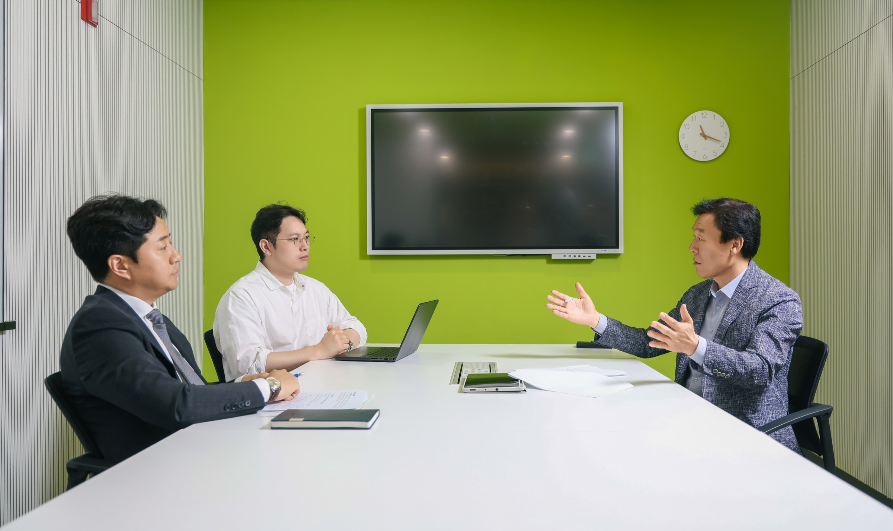
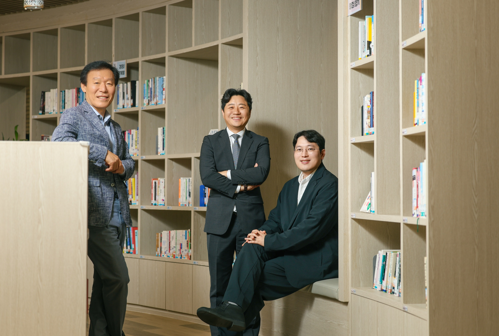
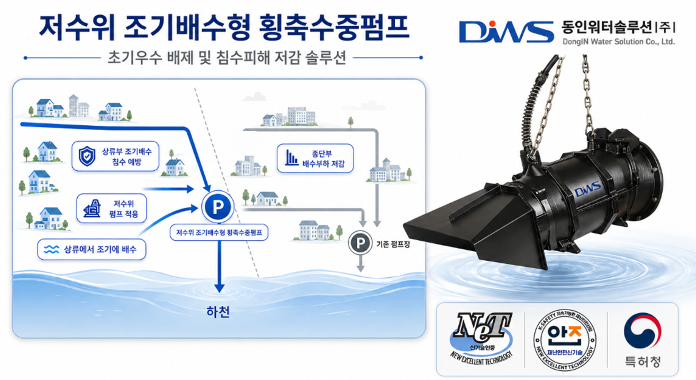
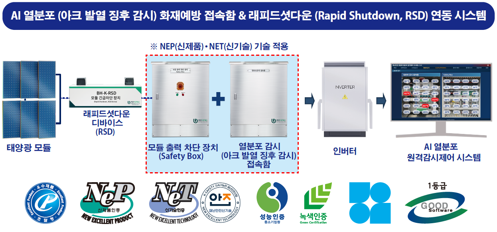

기후위기가 일상이 된 시대, 재난은 더 이상 예외적 사건이 아니다. 국지성 폭우, 폭염, 대형 산불이 반복되는 가운데 도시 인프라의 노후화와 초고령화 사회라는 구조적 위험까지 겹치며 재난의 양상은 빠르게 바뀌고 있다. 현장에서 배수·펌프 인프라와 태양광 발전 안전 솔루션을 개발해 온 산업계와, 재난안전 정책을 연구하는 학계가 한자리에 모여 기후재난의 현실과 기술의 역할, 그리고 산업 생태계가 나아가야 할 방향을 짚었다.
예측 불가·복합화·대형화…
노후 인프라와 고령 사회가 위험을 키운다
박상진 최근 재난의 특성을 세 가지로 정리할 수 있습니다. 첫째는 예측 불가능성, 둘째는 복합성, 셋째는 대형화입니다. 핵심 동인은 기후위기의 가속화와 인프라·사회의 노후화입니다. 과거에 지어진 건물과 구조물에 극단적 강우나 폭염이 더해지면 노후 인프라는 훨씬 빨리 한계에 도달합니다. 초고령사회에서는 빠른 재난 확산 속도를 따라 대피하기 어려운 인구도 늘어납니다.
김현철 현장에서 가장 크게 체감하는 변화는 강우 패턴입니다. 지금은 한 지점에 국지적으로 비가 집중됩니다. 도시가 고밀화되고 지하 공간과 불투수 지역이 늘면서 물이 낮은 곳으로 몰리는 속도도 빨라졌습니다. 대응의 패러다임이 피해 후 복구에서 위험 수위 도달 전에 시간을 버는 예방 중심으로 바뀌어야 합니다.
박영 태양광 산업도 발전 효율만큼 ‘내 자산을 지키는 것’이 중요해졌습니다. 폭우와 폭설은 설비 내부의 결로와 수분 침투를 일으키고 노후화와 화재를 촉진합니다. 설치 후 보호뿐 아니라 기후변화를 늦추는 방안도 함께 논의돼야 합니다.

골든타임을 아끼는 기술,
예측 정확도를 높이는 데이터
김현철 현장은 차단·배수·제어가 하나로 엮인 통합 방재 인프라를 요구합니다. 저희가 주목한 ‘소구역 블록 배수’는 상류부 침수취약 구간에서 수위가 낮을 때부터 선제적으로 물을 빼내 대형 펌프장의 부담을 분산합니다. 저수위 조기배수형 횡축수중펌프는 초기우수부터 배수 대응을 시작해 배수로 수위 상승을 억제합니다.
박영 AI 기반 열분포 감시 시스템은 접속함 내부를 24시간 감시해 온도 이상 신호를 찾습니다. 임계치에 도달하면 알림을 보내고, 대응하지 못하면 자동 차단합니다. 화재가 난 뒤 끄는 사후 조치에서 열원을 미리 끊는 예방 기술로 옮겨가는 셈입니다.
박상진 기술이 재난 대응에 기여하는 핵심은 골든타임 확보와 예측 정확도 향상입니다. AI, IoT, 드론, 디지털 트윈이 예방·감지·대응·복구 단계에서 사람을 지원하고 있습니다. 다만 최종 판단과 대응에는 여전히 사람의 개입이 필요합니다.
기술이 재난 대응에 기여할 수 있는 두 가지 핵심은 골든타임 확보와 예측 정확도 향상입니다. 최종 판단과 대응에는 여전히 사람의 판단이 개입될 수밖에 없습니다.박상진 부연구위원

특허는 많지만 영향력은 부족…
테스트베드와 실증이 핵심
박상진 재난안전산업은 종사자 수, 업체 수, 매출액 모두 꾸준히 증가하고 있습니다. 하지만 양적 지표에 비해 특허의 질적 영향력과 수출 비중은 낮습니다. 기술을 현장에서 시험할 테스트베드가 부족하고 개발·인증·실증·수출로 이어지는 선순환 구조가 아직 갖춰지지 않았기 때문입니다.
예방 투자의 경제적 효과도 중요합니다. 국제기구 보고서에 따르면 재난 예방에 선투자했을 때 효과가 투자 대비 4~15배에 달합니다. 직접 복구비뿐 아니라 간접적인 경제·사회적 피해까지 보면 예방이 훨씬 이롭습니다. ‘재난은 대응하고 복구하면 된다’에서 ‘예방이 최선의 투자’로 인식이 전환돼야 합니다.


입찰 구조 개선, 테스트베드 확충,
예방 예산 보장이 절실
김현철 좋은 기술도 공공 현장에서 실증할 기회가 없으면 신뢰를 쌓기 어렵습니다. 제품비만이 아니라 굴착 깊이, 부지 면적 등 전체 공사비 절감 효과를 함께 평가해야 합니다. 방재시설은 장마 전에 설치와 시운전까지 끝내야 하므로 사후 복구 중심에서 우기 전 가동을 목표로 한 예방 예산과 판로 지원으로 전환해야 합니다.
박영 태양광 장비는 실제 발전소에서 전력을 넣어봐야 제대로 시험할 수 있지만 현장 테스트베드가 부족합니다. 인증 제품의 분리 발주나 공공기관 우선 도입을 통해 레퍼런스를 쌓게 하는 방식도 필요합니다.
박상진 정책의 핵심은 실증 환경 확충, 판로 개척 지원, 통합 관리 체계 마련입니다. 기업 발굴부터 인증, 실증, 수출까지 이어지는 선순환 구조를 만들어야 합니다.
예방과 복구의 선순환, 그 중심에 현장 기반 기술이 있다. 배수 인프라, 태양광 안전, 정책 연구가 유기적으로 결합될 때 K-Safety의 경쟁력도 만들어질 수 있다.